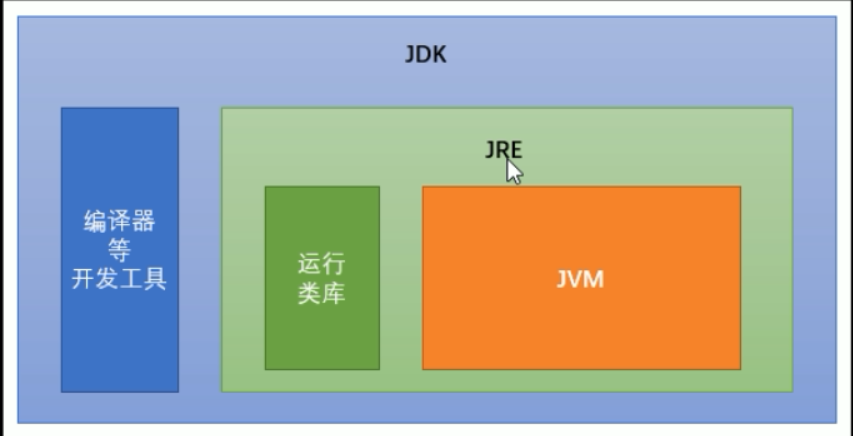
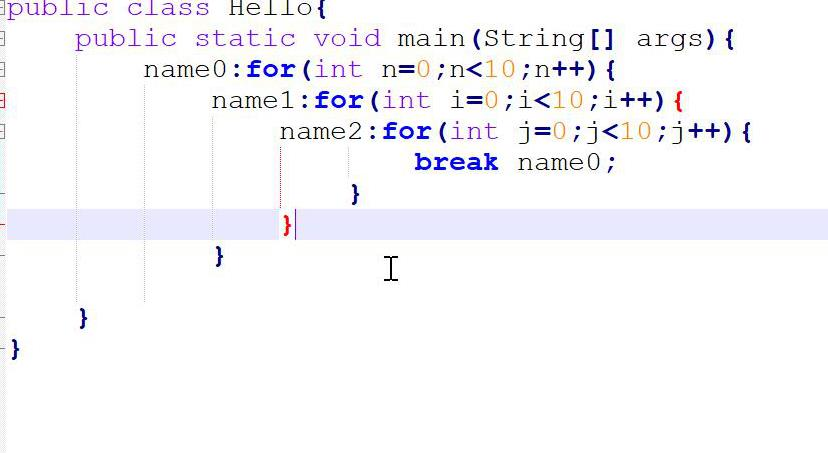
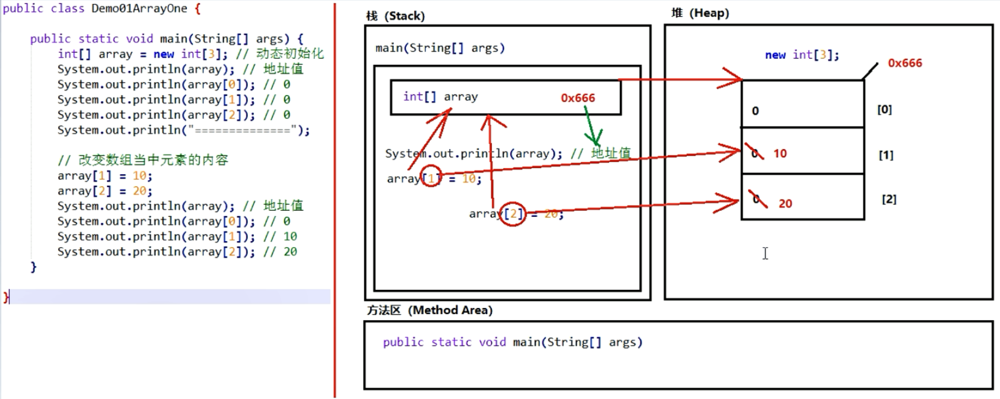

JVM：Java虚拟机
JRE: Java运行环境（包含JVM和Java运行的核心类库）
JDK: Java开发工具包（包含安装JDK和开发人员使用的工具）
关键字：有特殊含义的，不能随意使用的，被保留的
特点：全部小写，在高级工具变颜色的单词
标识符：自定义的类名，变量名，方法名

一、数据类型转换
1.自动类型转换（隐式）
特点：代码不需要进行特殊处理，自动完成
*规则：数据范围从小到大
2.强制类型转换（显式）
特点：代码需要进行特殊的格式处理，不能自动完成
格式：范围小的类型 范围小的变量名 = (范围小的类型) 原本范围大的数据
3.ASCII码表（数字和字符的对照关系表）
0——48
A——65
a——97
Unicode码表：万国码
注意事项：
1.强制类型转换：会发生精度损失和数据溢出
数据溢出：将数字转换为二进制，然后把二进制超出的高位部分删掉
2.byte/short/char这三种类型都可以发生数学运算
3.byte/short/char这三种类型在运算的时候，都会被首先提升为int类型
4.boolean类型不能发生数据类型转换
二、四则运算
1.对于一个整数的表达式来说，除法用的是整除，整数除以整除，结果仍是整数
注意事项：
1.一旦运算当中有不同类型的数据，那么结果将会是数据类型范围大的那种
2.String首字母大写，不是关键字
3.复合运算符可能会发生强制类型转换
4.20+30+“abc" == "50abc"
三、逻辑运算
短路运算：与"&&",或"||",具有短路效果，如果根据左边已经可以判断得到最终结果，那么右边的代码不再执行，节省性能
注意：如果是一个“&”或一个“|”则不会发生短路运算。
逻辑运算只能用于boolean值
与、或需要左右各自有一个boolean值，但是取反只要有唯一的一个boolean值
与、或两种运算符，如果有多个条件，可以连续写（A && B && C）
三元运算符中
必须同时保证问号右边的表达式都符合等号左侧数据类型的要求
三元运算符的结果必须被使用
四、方法入门
1.方法定义的先后顺序无所谓
2.方法的定义不能产生嵌套包含关系
3.方法定义好了之后，不会执行，如果想执行，一定要进行方法调用
方法不是一定在调用之后才会执行
4.方法执行步骤：
传递参数——>执行方法体——>将返回值返回给调用处
编译环境优化：
1.对于byte/short/char三种类型来说，如果右侧赋值的数值没有超过范围，那么javac编译器将会自动隐含的为我们补上一个(byte)(short)(char)。
1.如果没有超过左侧范围，编译器会补上强转
2.如果右侧超过了左侧范围，则直接报错
2.常量优化：在给变量进行赋值的时候，如果右侧的表达式当中全都是常量，没有任何变量，那么编译器javac将会直接将若干个常量表达式计算得到结果
五、流程控制
顺序结构
选择结构
如果前面条件成立，则不进行后面的判断
switch后面小括号当中只能是下列数据
基本数据类型：byte/short/char/int
引用数据类型：String/enum枚举
switch语句格式可以很灵活：前后顺序可以颠倒，而且break可以省略
匹配哪一个case就从哪一个位置向下执行，直到遇到了break或者整体结束为止（向下穿透）
循环结构
最基本的结构
for(;;){} //死循环
三种循环的区别：
如果条件判断从来没有满足过，for循环和while循环会执行0次，do-while循环会执行1次
for循环的变量在小括号当中定义，只有循环内部才可以使用，while循环和do-while循环初始化语句本来就在外边，所以出来循环后仍然可以使用
break跳出当前循环，外层循环不影响
continue:一旦执行，立刻跳过当前次循环剩余内容，马上开始下一次循环
死循环的标准格式
while(true){循环体}
for(;;){}

六、开发工具IDE
IDE：集成开发环境
七、方法进阶
定义方法完整格式
修饰符 返回值类型 方法名称(参数类型 参数名){
方法体
return 返回值；
}
2. 方法调用三种格式
单独调用：方法名称（参数）
打印调用
赋值调用
3. 对于void没有返回值的方法，只能使用单独调用
4.注意事项
注意事项：return 后面的返回值，必须和方法名的类型保持一致
1. 对于一个void没有返回值的方法，不能写return后面的内容，只能写return；
2. 对于方法当中最后一行的return可以省略不写
3. 一个方法中可以有多个return语句，但是保证同时只有一个会被执行到
5. 方法的重载
概念：在同一个类中，多个方法的名称一样，但是参数列表不一样
注意事项：
参数个数不同
参数类型不同
参数多类型的顺序不同
与参数名称无关
与方法的返回值类型无关
八、数组相关笔记
1.特点：
数组是一种引用类型
数组当中的 多个数据类型必须统一
数组的长度在程序运行期间不可改变
2.数组的初始化：在内存当中创建一个数组，并向其赋予一些默认值
动态初始化（指定长度）
数据类型[] 数组名称 = new 数据类型[数组长度]
静态初始化（指定内容）
数据类型[] 数组名称 = new 数据类型[]{元素1,元素2,元素3,.......};
注意事项
静态初始化没有指定长度，但是可以推算得到长度
静态初始化标准格式可以拆分为两个步骤
动态初始化也可以拆分成为两个步骤
静态初始化一旦使用省略格式，就不能 拆分成为两个步骤
数组索引越界异常：ArrayIndexOutOfBoundsException
所有的引用类型变量，都可以赋值为一个null，但是代表其什么值也没有
数组必须进行new初始化才能使用其中的元素，如果赋值null，
空指针异常：NullPointerException
3.java中内存需要划分为5个部分
1.栈(Stack):存放的都是方法中的局部变量。方法的运行一定要在栈当中运行
局部变量：方法的参数，或者是方法内部的变量
作用域：一旦超出作用域，立刻从栈内存当中消失
2.堆(Heap):凡是new出来的东西，都在堆当中
堆内存里面的东西都有一个地址值：16进制
堆内存里面的数据，都有默认值。规则：
如果是整数 默认为0
如果是浮点数 默认为0.0
如果是字符 默认为'\u0000'
如果是布尔值 默认为false
如果是引用类型 默认为null
3.方法区(Method Area):存储.class相关信息，包含方法的信息
4.本地方法栈(Native Method Stack):与操作系统相关
5.寄存器(pc Register):与CPU相关
注意事项：
当调用方法的时候，向方法的小括号进行传参，传递进去的其实是数组的地址
数组作为方法的参数，传递进去的其实是数组的地址值
数组作为方法的返回值，返回的其实也是数组的地址值
